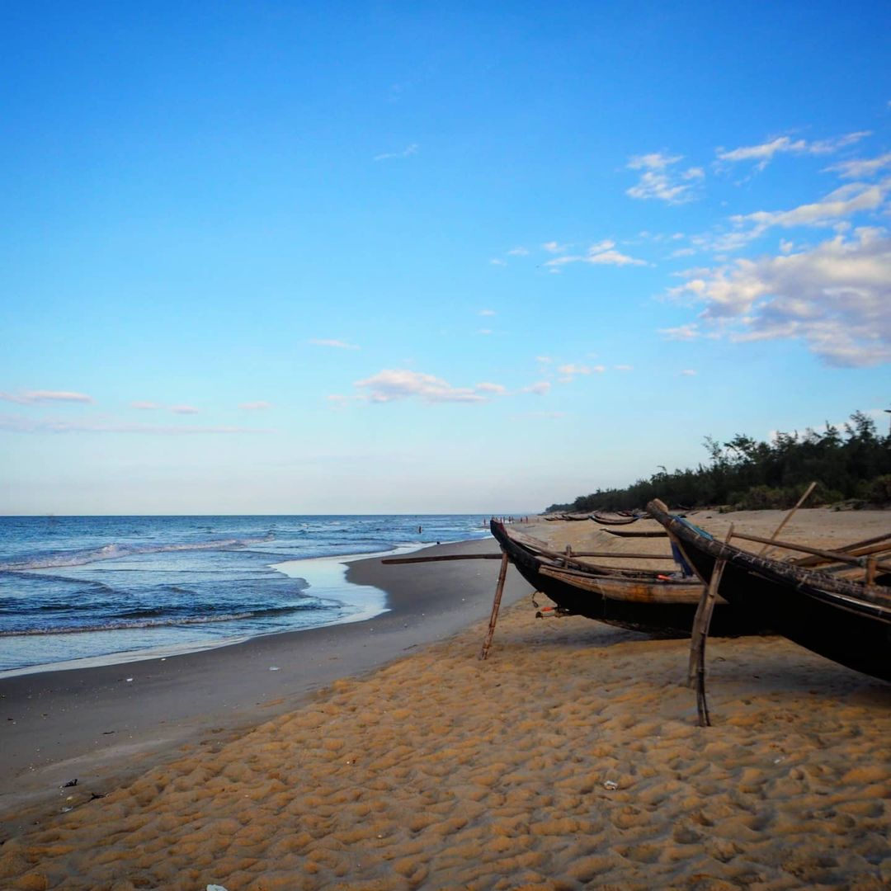
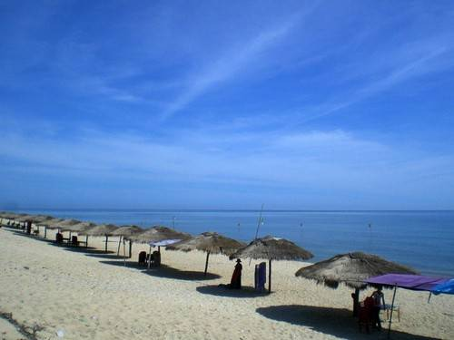
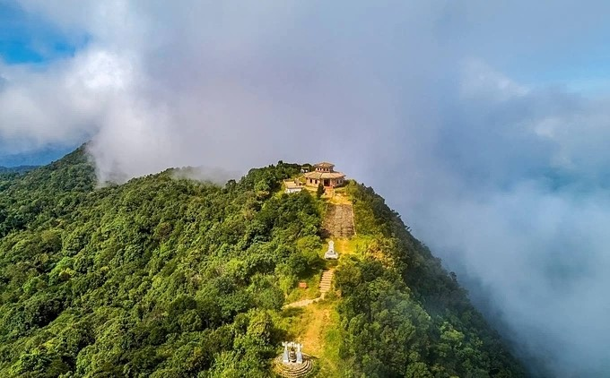
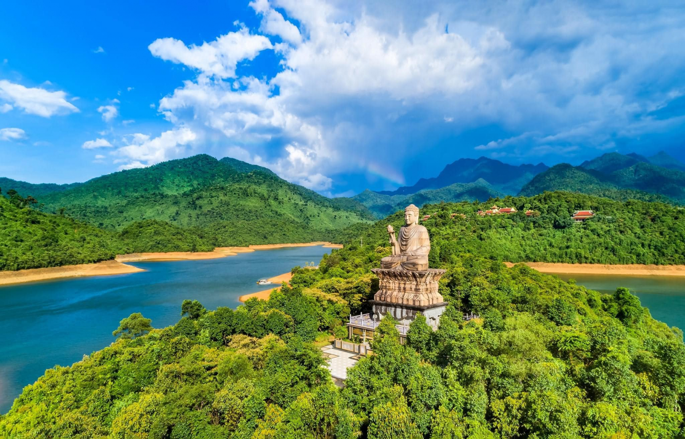
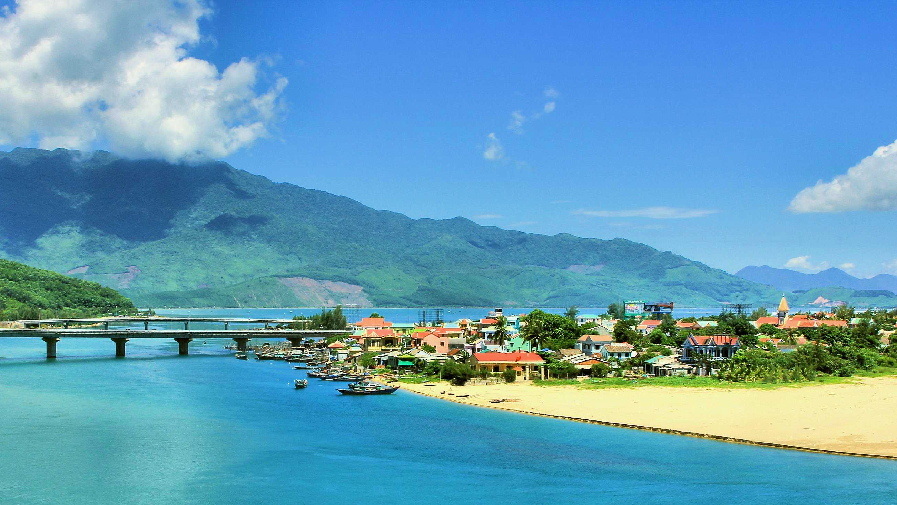
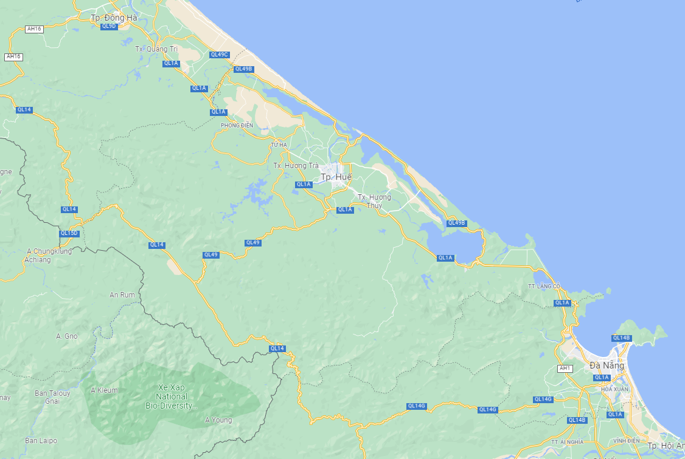
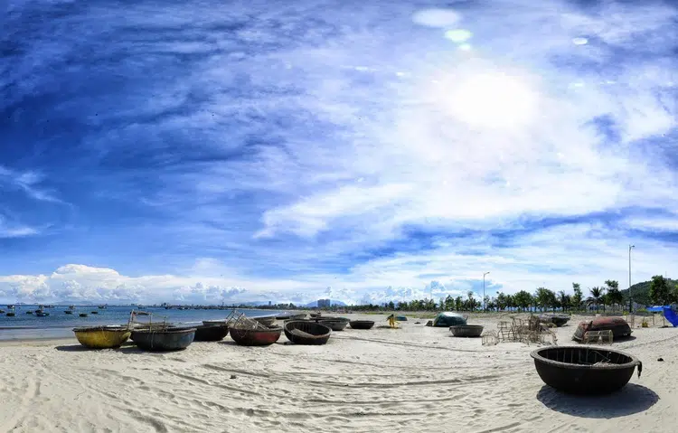
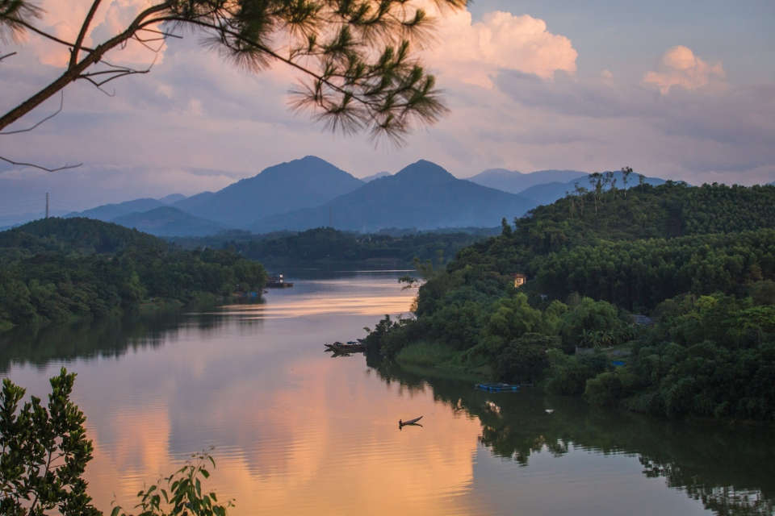

Đến Huế, bên cạnh việc cảm nhận miền đất với nét đẹp cổ kính đượm chút trầm tư, sâu lắng, nghĩ đến các cung điện, đến nhã nhạc cung đình hay những thứ mang dấu vết của vua chúa xưa thì thiên nhiên nơi đây cũng mang đến nhiều phong cảnh đẹp Một trong những điểm nhấn đặc biệt đó chính là những bãi biển trải dài tít tắp, hoang sơ và mang lại cảm giác bình yên, thư giãn... Những bãi biển trải dài tít tắp, những con suối mát lạnh hiền hòa, những dòng thác tung bọt trắng xóa đang sẵn sàng đem đến cho du khách những hương vị tươi mát khi đến Huế vào những ngày nắng nóng.
Một số thắng cảnh khác ở Huế

Biển Thuận An

Biển Vinh Thanh

Núi Bạch Mã

Thiền viện Trúc Lâm Bạch Mã

Biển Lăng Cô ở đâu?
Tọa lạc giữa cố đô Huế và thành phố Đà Nẵng phồn thịnh, ở vị trí trung tâm của con đường di sản Việt Nam, biển Lăng Cô thực sự là một thiên đường du lịch với những vẻ đẹp thiên nhiên nguyên thủy và là một trong những nơi hiếm hoi có cả núi, sông, biển, đảo và đầm phá.
Nằm nép mình giữa 2 ngọn đèo lớn là đèo Hải Vân và đèo Phú Gia. Biển Lăng Cô thuộc thị trấn Lăng Cô, huyện Phú Lộc, tỉnh Thừa Thiên Huế.
Lăng Cô là vùng biển có không khí dễ chịu và dịu mát, nguyên sơ còn vẹn nguyên từng nhiệt đới rộng lớn, những dãy núi bí ẩn phía xa xa đã làm không ít du khách muốn đến đây để được khám phá hết những điều kỳ diệu có một không hai ở đây.
Một số địa điểm nổi tiếng ở Huế trên bản đồ

Hãy thử click vào những hình này trên bản đồ->
Bãi biển Thuận An
Bãi biển Thuận An
Là một trong những bãi biển đẹp nhất tại Huế, bãi biển Thuận An thu hút khách du lịch bởi vẻ hoang sơ với bờ cát trắng mịn trải dài và làn nước biển trong xanh. Đây là điểm đến lý tưởng cho du khách tận hưởng không gian mát lạnh, yên bình của biển cả.

Thiền viện Trúc Lâm Bạch Mã
Thiền viện Trúc Lâm Bạch Mã
Thiền viện Trúc Lâm Bạch Mã thuộc xã Lộc Hòa, huyện Phú Lộc, tọa lạc ngay giữa lòng hồ Truồi. Có 3 khu vực chính trong Thiền viện Trúc Lâm Bạch Mã là ngoại viện (điện thờ chính, thờ đức Phật tổ, sau chính điện là khu vực thờ Tổ sư Đạt Ma), tăng viện (nơi tu hành của tu sĩ nam và phật tử là nam giới), ni viện (nơi chuyên tu của tu sĩ nữ và phật tử nữ giới). Đây là địa điểm du lịch Huế free.
Đồi Vọng Cảnh
Đồi Vọng Cảnh
Đây là địa điểm du lịch thành phố Huế cho du khách không gian ngắm trọn phong cảnh nên thơ của thành phố. Đồi Vọng Cảnh có không gian trong lành, lãng mạn và khung cảnh thanh bình, xưa thường được các vị vua nhà Nguyễn chọn làm điểm dừng chân nghỉ ngơi và vãn cảnh, hiện nay cũng là điểm đến du lịch lý tưởng cho nhiều du khách trong nước và quốc tế.

Núi Bạch Mã
Núi Bạch Mã
Núi Bạch Mã ở độ cao 1.450m, là địa điểm du lịch Huế nổi tiếng với những con suối và nhiều ngọn thác ngoạn mục như thác Đỗ Quyên, thác Bạc. Núi Bạch Mã là ranh giới tự nhiên giữa tỉnh Thừa Thiên Huế và thành phố Đà Nẵng nên từ trên đỉnh có thể ngắm toàn cảnh đẹp của đèo Hải Vân, núi Túy Vân...
Hải Vân Quan
Hải Vân Quan
Hải Vân Quan là công trình nghệ thuật kiến trúc độc đáo, mang ý nghĩa lịch sử quan trọng, được xây dựng vào năm Minh Mạng thứ 7. Từ Hải Vân Quan, du khách có thể ngắm nhìn phong cảnh hết sức ngoạn mục của bãi biển và làng chài Lăng Cô của Huế. Không chỉ vậy, du khách còn có thể ngắm nhìn toàn bộ Đà Nẵng.